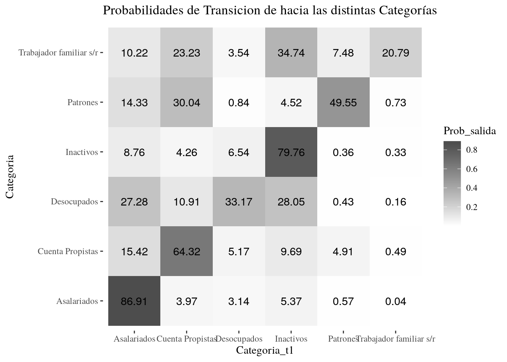

Capítulo 7 Pool de Datos en Panel y Matrices de Transición
Reiniciar R
7.1 Datos De Panel
7.1.1 Introducción
En esta clase veremos como construir un pool de datos de panel utilizando múltiples bases de la EPH. El ejercicio consiste en analizar las transiciones individuales entre las distintas categorías y estados ocupacionales. Trabajaremos con un caso sencillo, sin reclasificar a la población en más que las categorías definidas por la EPH. A su vez, para maximizar la cantidad de casos del ejercicio utilizando las bases recientemente publicadas, trabajaremos con transiciones entre trimestres (Aunque en la práctica suelen realizarse paneles anuales para observar más movilidad)
Cargamos la librería tidyverse con la cual trabajaremos para procesar la información
library(tidyverse, warn = FALSE)Levantamos las Bases Individuales de 4 trimestres.
individual.216 <- read.table("Fuentes/usu_individual_t216.txt", sep=";", dec=",", header = TRUE, fill = TRUE)
individual.316 <- read.table("Fuentes/usu_individual_t316.txt", sep=";", dec=",", header = TRUE, fill = TRUE)
individual.416 <- read.table("Fuentes/usu_individual_t416.txt", sep=";", dec=",", header = TRUE, fill = TRUE)
individual.117 <- read.table("Fuentes/usu_individual_t117.txt", sep=";", dec=",", header = TRUE, fill = TRUE)7.1.2 Pasos para la construccion del Panel
- Creamos un Vector que contenga unicamente las variables de interés, para recortar luego la base con la funcion select.
- Unimos todas las bases con la función bind_rows, seleccionando solo las variables del vector.
- Filtramos de la base los casos de no respuesta y acotaremos en este ejercicio el analisis a la población entre 18 y 65 años.
- Creamos las categorías de análisis que deseamos observar en distintos perídos.
- Armamos un identificador ordinal para los registros de cada trimestre.
- Replicamos el dataframe construido y le cambiamos los nombres a todas las variables, a excepción de las que usaremos para identificar a un mismo individuo ( CODUSU, NRO_HOGAR, COMPONENTE).
- En la base replicada, modificamos el identificador ordinal en función de la amplitud que deseamos en las observaciones de panel. En nuestro caso como uniremos registros con distancia de 1 trimestre, le restamos 1 a cada valor
- Unimos ambas bases con la funcion inner_join que solo nos dejará registros que en ambas bases contengan los mismos CODUSU, NRO_HOGAR, COMPONENTE e identificador ordinal.
- Creamos la columna para las consistencias, y luego filtramos la base para eliminar los registros inconsistentes
#Paso 1
var.ind <- c('CODUSU','NRO_HOGAR','COMPONENTE', 'ANO4','TRIMESTRE','ESTADO','CAT_OCUP','PONDERA', 'CH04', 'CH06','P21','PP3E_TOT')
#Paso 2
Bases_Continua <- bind_rows(
individual.216 %>% select(var.ind),
individual.316 %>% select(var.ind),
individual.416 %>% select(var.ind),
individual.117 %>% select(var.ind))
#Pasos 3 y 4
Bases_Continua <- Bases_Continua %>%
filter(CH06 %in% c(18:65),ESTADO !=0) %>%
mutate(Categoria = case_when(ESTADO %in% c(3,4)~"Inactivos",
ESTADO == 2 ~"Desocupados",
ESTADO == 1 & CAT_OCUP == 1 ~"Patrones",
ESTADO == 1 & CAT_OCUP == 2 ~"Cuenta Propistas",
ESTADO == 1 & CAT_OCUP == 3 ~"Asalariados",
ESTADO == 1 & CAT_OCUP == 4 ~"Trabajador familiar s/r",
TRUE ~ "Otros"))
#Paso 5
Bases_Continua <- Bases_Continua %>%
mutate(Trimestre = paste(ANO4, TRIMESTRE, sep="_")) %>%
arrange(Trimestre) %>%
mutate(Id_Trimestre = match(Trimestre,unique(Trimestre)))
#Paso 6
Bases_Continua_Replica <- Bases_Continua
names(Bases_Continua_Replica)## [1] "CODUSU" "NRO_HOGAR" "COMPONENTE" "ANO4"
## [5] "TRIMESTRE" "ESTADO" "CAT_OCUP" "PONDERA"
## [9] "CH04" "CH06" "P21" "PP3E_TOT"
## [13] "Categoria" "Trimestre" "Id_Trimestre"names(Bases_Continua_Replica)[4:(length(Bases_Continua_Replica)-1)] <-
paste0(names(Bases_Continua_Replica)[4:(length(Bases_Continua_Replica)-1)],"_t1")
names(Bases_Continua_Replica)## [1] "CODUSU" "NRO_HOGAR" "COMPONENTE" "ANO4_t1"
## [5] "TRIMESTRE_t1" "ESTADO_t1" "CAT_OCUP_t1" "PONDERA_t1"
## [9] "CH04_t1" "CH06_t1" "P21_t1" "PP3E_TOT_t1"
## [13] "Categoria_t1" "Trimestre_t1" "Id_Trimestre"#Paso 7
Bases_Continua_Replica$Id_Trimestre <- Bases_Continua_Replica$Id_Trimestre - 1
#Pasos 8 y 9
Panel_Continua <- inner_join(Bases_Continua,Bases_Continua_Replica)
Panel_Continua <- Panel_Continua %>%
mutate(Consistencia = case_when(abs(CH06_t1-CH06) > 2 |
CH04 != CH04_t1 ~ "inconsistente",
TRUE ~ "consistente")) %>%
filter(Consistencia == "consistente")7.2 Matrices de transición
7.2.1 Calculo de probabilidades de transición.
Realizaremos un breve ejercicio para identificar la magnitud relativa de las transiciones entre las distintas categorías ocupacionales. Para ello calculamos la suma ponderada de la cantidad de casos observados para cada posible combinación de Cateogria y Categoria_t1. Luego calcularemos la probabilidad de encontrarse en categoría en t1, condicional a haber pertenecido a las distintas categorías en t0.
Categorias_transiciones <- Panel_Continua %>%
#filter(Categoria != Categoria_t1) %>%
group_by(Categoria,Categoria_t1) %>%
summarise(frec_muestral = n(),
frecuencia = sum((PONDERA+PONDERA_t1)/2)) %>%
ungroup() %>%
group_by(Categoria) %>%
mutate(Prob_salida = frecuencia/sum(frecuencia))
Categorias_transiciones[1:10,]## # A tibble: 10 x 5
## # Groups: Categoria [2]
## Categoria Categoria_t1 frec_muestral frecuencia Prob_salida
## <chr> <chr> <int> <dbl> <dbl>
## 1 Asalariados Asalariados 18227 8215874. 0.869
## 2 Asalariados Cuenta Propistas 778 374916. 0.0397
## 3 Asalariados Desocupados 503 297061 0.0314
## 4 Asalariados Inactivos 1250 507510 0.0537
## 5 Asalariados Patrones 115 54242 0.00574
## 6 Asalariados Trabajador familia… 14 4002. 0.000423
## 7 Cuenta Propist… Asalariados 758 398875 0.154
## 8 Cuenta Propist… Cuenta Propistas 3627 1663297 0.643
## 9 Cuenta Propist… Desocupados 210 133810. 0.0517
## 10 Cuenta Propist… Inactivos 569 250491 0.0969Notese que la linea comentada en el medio de la cadena de pipes, nos permitiría iterar rapidamente sobre el procedimiento anterior agregando un filtro. En este ejemplo, podríamos recalcular las proporciones únicamente para aquellas personas que presentan un movimiento de categoría
7.2.2 Gráfico de Matriz de Transición
library(ggthemes)
ggplot(Categorias_transiciones, aes(x = Categoria_t1,
y = Categoria, fill = Prob_salida,
label =round(Prob_salida*100,2))) +
labs(title = "Probabilidades de Transicion de hacia las distintas Categorías")+
geom_tile()+
geom_text()+
scale_fill_gradient(low = "grey100", high = "grey30")+
theme_tufte()
7.3 Ejercicios Para prácticar
- Levantar todas las bases individuales de EPH que se encuentran en la carpeta Fuentes
- Crear un vector llamado Variables que contenga los nombres de las siguientes variables de interés: - ANO4,TRIMESTRE,CODUSU,NRO_HOGAR,COMPONENTE,ESTADO,CH04,PONDERA
Acotar la Base únicamente a las variables de interés, utilizando el vector Variables
Replicar los procedimientos vistos en clase para el armado del panel de observaciones inter-trimestrales y luego calcular: - ¿Cuántos casos (muestrales y ponderados) tenemos en nuestro pool de datos en panel? - ¿Cuántos casos muestrales tenemos por cada trimestre en nuestro pool de datos? ¿Qué porcentaje de los registros totales de un trimestre representa? - ¿Cuántos casos son inconsistentes controlando por sexo en cada trimestre? Calcularlo en términos absolutos y porcentuales